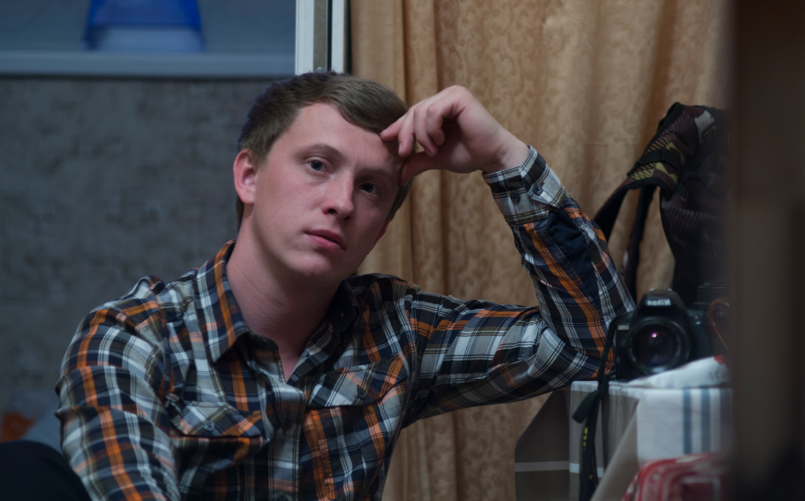

Киевский Академический Театр Кукол
Главная
О себе
Контакты
План сцены

Я Кукоба Андрей Владимирович, родился в Киеве.
Работаю в Киевском Академическом Театре Кукол - Звукорежиcсером. В театре я работаю почти 10 лет, с того момента как построили театру новое здание.